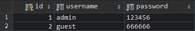
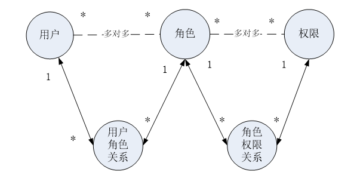
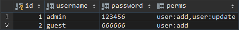

一、简介
Apache Shiro 是一个功能强大且易于使用的Java安全框架，它执行身份验证、授权、加密和会话管理。使用Shiro易于理解的API，您可以快速轻松地保护任何应用程序——从最小的移动应用程序到最大的web和企业级应用程序。
官网 上有个10 Minute Tutorial（10分钟教程），方便我们快速入门shiro
目前的版本：
shiro核心概述 在最高的概念层次上，Shiro的架构有三个主要概念：Subject 、SecurityManager 和Realms 。下图来自官网。
Subject（对象主体）：这个主体本质上是当前执行用户的一个特定于安全的“视图”。虽然“用户”一词通常意味着一个人，但主体可以是一个人，但它也可以表示第三方服务、守护进程帐户、定时任务或任何类似的东西——基本上是当前与软件交互的任何东西。
主体实例都要（并且必须）绑定到SecurityManager。当您与主体交互时，这些交互将转换为与SecurityManager的特定主体交互
SecurityManager（安全管理器）：SecurityManager是Shiro体系结构的核心，它充当一种“保护伞”对象，协调其内部安全组件，这些组件共同构成一个对象图。但是，一旦为应用程序配置了SecurityManager及其内部对象图，它通常就不受影响了，应用程序开发人员几乎把所有的时间都花在了Subject API上。
Realms（领域）：Realms充当Shiro和应用程序安全数据之间的“桥梁”或“连接器”。当需要与安全相关数据（如用户帐户）进行实际交互以执行身份验证（登录）和授权（访问控制）时，Shiro会从为应用程序配置的一个或多个Realm中查找其中的许多内容。
二、项目搭建 新建一个基于springboot的web项目，依赖如下，可选添加spring-boot-devtools开启热部署方便调试
1 2 3 4 5 6 7 8 9 10 11 12 13 14 <dependency > <groupId > org.springframework.boot</groupId > <artifactId > spring-boot-starter-web</artifactId > </dependency > <dependency > <groupId > org.springframework.boot</groupId > <artifactId > spring-boot-starter-thymeleaf</artifactId > </dependency > <dependency > <groupId > org.apache.shiro</groupId > <artifactId > shiro-spring-boot-web-starter</artifactId > <version > 1.5.3</version > </dependency >
准备几个简单的html页面
index.html
1 2 3 4 5 6 7 8 9 10 11 <!DOCTYPE html > <html lang ="en" xmlns:th ="http://www.thymeleaf.org" > <head > <meta charset ="UTF-8" > <title > Title</title > </head > <body > <h1 > 首页</h1 > <a th:href ="@{/user/add}" > 添加用户</a > | <a th:href ="@{/user/update}" > 修改用户</a > </body > </html >
/user/add.html
1 2 3 4 5 6 7 8 9 10 <!DOCTYPE html > <html lang ="en" > <head > <meta charset ="UTF-8" > <title > Title</title > </head > <body > <h1 > 添加用户</h1 > </body > </html >
/user/update.html
1 2 3 4 5 6 7 8 9 10 <!DOCTYPE html > <html lang ="en" > <head > <meta charset ="UTF-8" > <title > Title</title > </head > <body > <h1 > 修改用户</h1 > </body > </html >
login.html
1 2 3 4 5 6 7 8 9 10 11 12 13 14 15 16 17 18 19 20 <!DOCTYPE html > <html lang ="en" > <head > <meta charset ="UTF-8" > <title > 登录</title > </head > <body > <form action ="" > <label > 用户名： <input type ="text" name ="username" > </label > <br > <label > 密码： <input type ="password" name ="password" > </label > <br > <input type ="submit" value ="登录" > </form > </body > </html >
用控制器给这些页面做个跳转
1 2 3 4 5 6 7 8 9 10 11 12 13 14 15 16 17 18 19 20 21 22 23 @Controller public class MainController @GetMapping ("/index" ) public String toIndex () return "index" ; } @GetMapping ("/login" ) public String toLogin () return "login" ; } @GetMapping ("/user/add" ) public String addUser () return "user/add" ; } @GetMapping ("/user/update" ) public String updateUser () return "user/update" ; } }
以上基本环境就搭建完成了，下面开始shiro的配置
三、配置shiro（原生方式） 1、访问拦截 按照上面那个核心概念图，自定义一个Realm类，继承AuthorizingRealm类并重写方法
1 2 3 4 5 6 7 8 9 10 11 12 13 public class MyRealm extends AuthorizingRealm @Override protected AuthorizationInfo doGetAuthorizationInfo (PrincipalCollection principals) System.out.println("===授权===" ); return null ; } @Override protected AuthenticationInfo doGetAuthenticationInfo (AuthenticationToken token) throws AuthenticationException System.out.println("===验证===" ); return null ; } }
接下来就是shiro的主要配置了：
1 2 3 4 5 6 7 8 9 10 11 12 13 14 15 16 17 18 19 20 21 22 23 24 25 26 27 28 29 30 31 @Configuration public class ShiroConfig @Bean public MyRealm myRealm () return new MyRealm(); } @Bean ("webSecurityManager" ) public DefaultWebSecurityManager securityManager (@Qualifier("myRealm" ) MyRealm myRealm) DefaultWebSecurityManager securityManager = new DefaultWebSecurityManager(); securityManager.setRealm(myRealm); return securityManager; } @Bean public ShiroFilterFactoryBean shiroFilterFactoryBean ( @Qualifier("webSecurityManager" ) DefaultWebSecurityManager webSecurityManager) ShiroFilterFactoryBean factoryBean = new ShiroFilterFactoryBean(); factoryBean.setSecurityManager(webSecurityManager); Map<String, String> map = new LinkedHashMap<>(); map.put("/user/**" , "authc" ); factoryBean.setFilterChainDefinitionMap(map); factoryBean.setLoginUrl("/login" ); return factoryBean; } }
这是比较传统的方法，类似于在spring程序里用xml配置bean，springboot中通过注解写成了配置类，基本步骤如下：
首先需要提供Realm实例
然后配置SecurityManager，把Realm实例配置给SecurityManager，在这里的SecurityManager是DefaultWebSecurityManager
最后配置ShiroFilterFactoryBean，将SecurityManager配置给ShiroFilterFactoryBean，然后在ShiroFilterFactoryBean中指定路径拦截规则（使用有序的map对象）
可以使用setLoginUrl()指定登录路径
过滤规则 在上面的路径拦截规则中，map的key代表路径（可以使用通配符），value代表拦截规则，可以用DefaultFilter.authc.toString()来表示value，DefaultFilter这个枚举类列出了可以使用的拦截规则名简写及对应的类：
用于身份验证的：
anon：允许立即访问路径而不执行任何类型的安全检查的替换器。
authc：需要对请求用户进行身份验证才能继续请求，如果没有，则通过将用户重定向到您配置的登录路径来强制用户去登录。
authcBasic：需要对请求用户进行身份验证才能继续请求，如果没有，则需要用户通过特定于HTTP基本协议的质询登录。成功登录后，允许他们继续访问请求的资源或url。
authcBearer：需要对请求用户进行身份验证才能继续请求，如果没有，则需要用户通过特定于HTTP承载协议的质询登录。成功登录后，允许他们继续访问请求的资源/url。
logout：一个简单的过滤器，在收到请求时，它将立即注销当前正在执行的subject，然后将它们重定向到配置的URL。
user：允许访问者是已知用户（定义为具有已知主体）时访问资源的过滤器。
用于授权的：
perms：如果当前用户具有映射值指定的权限，则允许访问的替换器；如果用户没有指定的所有权限，则拒绝访问。
port：要求请求位于特定端口上的替换器，如果不是，则重定向到该端口上的同一URL。
rest：将HTTP请求的方法（如GET、POST等）转换为相应操作的过滤器。
roles：如果当前用户具有由映射值指定的角色，则允许访问的替换器；如果用户没有指定的角色，则拒绝访问。
ssl：要求请求通过SSL的过滤器。
用于session：
noSessionCreation：将在请求期间禁用创建新会话的路径匹配过滤器。
通过上面的配置，实现了路径的访问拦截，当没有登录时访问路径会跳转到登录页面，接下来实现登录认证功能
2、用户认证 补充登录页的表单属性，msg用来显示返回的错误提示信息
1 2 <form th:action ="@{/login}" method ="post" > <p th:text ="${msg}" > </p >
控制器里增加相应的处理，此处参考官方教程的10分钟快速入门
1 2 3 4 5 6 7 8 9 10 11 12 13 14 15 16 17 18 19 @PostMapping ("/login" )public String doLogin (String username, String password, Model model) Subject subject = SecurityUtils.getSubject(); UsernamePasswordToken token = new UsernamePasswordToken(username, password); try { subject.login(token); } catch (UnknownAccountException uae) { model.addAttribute("msg" , "用户名不存在" ); return "login" ; } catch (IncorrectCredentialsException ice) { model.addAttribute("msg" , "密码错误" ); return "login" ; } return "index" ; }
最后修改MyRealm类的doGetAuthenticationInfo()方法
1 2 3 4 5 6 7 8 9 10 11 12 @Override protected AuthenticationInfo doGetAuthenticationInfo (AuthenticationToken token) throws AuthenticationException { System.out.println("===验证===" ); String username = (String) token.getPrincipal(); if ("admin" .equals(username)) { return new SimpleAuthenticationInfo(username,"123456" ,getName()); } return null ; }
返回值类型是AuthenticationInfo接口，需要找到它的实现类，所以使用SimpleAuthenticationInfo类，其中的参数依次是
principal–与指定realm关联的“primary”主体
credentials–验证给定主体的凭证
realmName–从主体和凭据中获取realm名字
这里简单处理一下，用户名可以直接对比，而密码必须交给shiro去验证
四、整合mybatis 经过上面的配置后，shiro的权限验证就基本完成了，下面使用mybatis接入数据
首先准备一个user表

然后使用Free MyBatis plugin 插件生成对应的实体类、DAO接口、xml文件
导入依赖
1 2 3 4 5 6 7 8 9 10 <dependency > <groupId > org.mybatis.spring.boot</groupId > <artifactId > mybatis-spring-boot-starter</artifactId > <version > 2.1.3</version > </dependency > <dependency > <groupId > mysql</groupId > <artifactId > mysql-connector-java</artifactId > <version > 5.1.38</version > </dependency >
开启mapper接口扫描
1 @MapperScan ("com.example.dao" )
配置数据源与mybatis
1 2 3 4 5 6 mybatis.mapper-locations =classpath:mapper/*.xml spring.datasource.driver-class-name =com.mysql.jdbc.Driver spring.datasource.url =jdbc:mysql:///mybatis?useSSL=false spring.datasource.username =root spring.datasource.password =root
mapper接口增加一个User selectByName(String username)方法，同时在xml文件增加对应配置
1 2 3 4 5 6 <select id ="selectByName" parameterType ="java.lang.String" resultMap ="BaseResultMap" > select <include refid ="Base_Column_List" /> from user where username = #{username} </select >
修改一下MyRealm类doGetAuthenticationInfo()方法
1 2 3 4 5 6 7 8 9 10 11 12 13 14 15 @Resource private UserDao userDao;@Override protected AuthenticationInfo doGetAuthenticationInfo (AuthenticationToken token) throws AuthenticationException System.out.println("===验证===" ); String username = (String) token.getPrincipal(); User user = userDao.selectByName(username); if (user != null ) { return new SimpleAuthenticationInfo(user, user.getPassword(), getName()); } return null ; }
这里省略了业务层，直接注入DAO。现在可以用数据库里用户名和对应的密码来登录了
五、授权 1、了解shiro中的权限（Permission） 官网原文
shiro将权限或操作定义为显式操作的语句。它只是对应用程序中原始功能的陈述。权限是安全策略中最底层的构造，它们只显式定义应用程序可以做什么。它们并没有描述“谁”能够执行这些操作。
定义允许“谁”（用户）做“什么”（权限）是以某种方式向用户分配权限的练习。这通常是由应用程序的数据模型完成的，并且在不同的应用程序中可能会有很大的差异。
例如，权限可以分组到一个角色中，并且该角色可以与一个或多个用户对象相关联。或者某些应用程序可以有一组用户，并且可以为一个组分配一个角色，这通过传递关联意味着该组中的所有用户都被隐式地授予该角色中的权限。
对于如何向用户授予权限有许多变体—应用程序根据应用程序需求确定如何对此进行建模。
简单来说，类似于下图，把权限分配给角色，用户再拥有这个角色。

2、数据准备 在数据表中增加一列字段perms

同时在实体类、xml文件中增加相应的处理
1 <result column ="perms" jdbcType ="VARCHAR" property ="perms" />
3、未授权跳转 控制器增加未授权的跳转路径，这里仅返回提示信息
1 2 3 4 5 @GetMapping ("/Unauthorized" )@ResponseBody public String unAuthorized () return "未授权禁止访问" ; }
然后在shiroFilterFactoryBean方法中设置跳转
1 factoryBean.setUnauthorizedUrl("/Unauthorized" );
同时添加过滤规则，注意顺序，在/user/**规则的前面
1 2 map.put("/user/add" , "perms[user:add]" ); map.put("/user/update" , "perms[user:update]" );
4、访问授权 最后在MyRealm的doGetAuthorizationInfo方法中对授权进行处理
1 2 3 4 5 6 7 8 9 10 @Override protected AuthorizationInfo doGetAuthorizationInfo (PrincipalCollection principals) System.out.println("===授权===" ); User user = (User) principals.getPrimaryPrincipal(); SimpleAuthorizationInfo info = new SimpleAuthorizationInfo(); info.addStringPermissions(Arrays.asList(user.getPerms().split("," ))); return info; }
用principals.getPrimaryPrincipal()得到的对象就是在doGetAuthenticationInfo中返回对象的构造方法的第一个参数
addStringPermissions需要传入一个字符串的集合，而addStringPermission不需要
六、在thymeleaf中使用shiro标签 1、增加依赖 1 2 3 4 5 <dependency > <groupId > com.github.theborakompanioni</groupId > <artifactId > thymeleaf-extras-shiro</artifactId > <version > 2.0.0</version > </dependency >
这个依赖是非官方的，但是用来在thymeleaf里使用shiro标签足够了
2、注入“方言” 在ShiroConfig里增加一个bean，ShiroDialect类是上面那个依赖包里的
1 2 3 4 @Bean public ShiroDialect shiroDialect () return new ShiroDialect(); }
3、使用标签 先增加命名空间xmlns:shiro="http://www.pollix.at/thymeleaf/shiro"，然后使用相应标签
不添加或填写错误不影响程序运行，但会影响IDE的提示功能。
1 2 3 <a th:href ="@{/login}" shiro:notAuthenticated ="" > 登录</a > <a th:href ="@{/user/add}" shiro:hasPermission ="user:add" > 添加用户</a > <a th:href ="@{/user/update}" shiro:hasPermission ="user:update" > 修改用户</a >
现在启动程序，未登录或无相应权限时不会显示添加用户、修改用户的a标签，登录后不会显示登录的a标签
附：基于starter的快速配置方式 按照官方的整合说明 ，推荐的配置方式如下
还是使用配置类，这里不需要额外添加securityManager了
1 2 3 4 5 6 7 8 9 10 11 12 13 14 15 16 17 18 19 20 @Configuration public class ShiroConfig @Bean public Realm realm () return new MyRealm(); } @Bean public ShiroFilterChainDefinition shiroFilterChainDefinition () DefaultShiroFilterChainDefinition definition = new DefaultShiroFilterChainDefinition(); definition.addPathDefinition("/user/add" , "perms[user:add]" ); definition.addPathDefinition("/user/update" , "perms[user:update]" ); definition.addPathDefinition("/user/**" , "authc" ); System.out.println("shiroFilterChainDefinition" ); return definition; } }
然后在application.properties里增加设置
1 2 3 4 5 6 7 shiro.enabled =true shiro.web.enabled =true shiro.loginUrl =/login shiro.unauthorizedUrl =/Unauthorized shiro.sessionManager.sessionIdUrlRewritingEnabled =false shiro.sessionManager.sessionIdCookieEnabled =true shiro.successUrl =/
功能依次是：开启shiro启动器配置，开启shiro web配置，设置登录路径，设置未授权跳转路径，是否将sessionId显示在url，是否保存sessionId到cookie，登录成功后的跳转路径